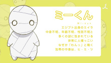
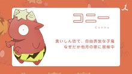
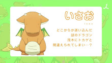
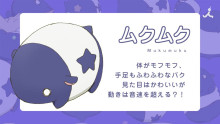
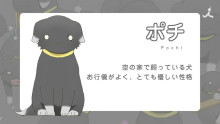

How to keep a mummy
The animated television series "How to Keep a Mummy" (Japanese: ミイラの飼い方) is adapted from the manga of the same name by Kakeru Utsugi. The anime adaptation was announced on June 30, 2017, and is produced by 8-Bit.
Genre: Comedy, Slice of Life, and Supernatural
Release Date: January 12, 2018
Epsodes: 12
Characters
 |
Sora Kashiwagi |
|---|---|
| CV: たむらむつみ (Tamura Mutsumi) つだみなみ (Tsuda Minami) [kid] Although he is an ordinary high school student, he has a father who calls himself an "adventurer" Keep Mii at home and live together. Because of his father's influence, he feels a little different from ordinary people. |
|
|  | Mii |
| CV: Mummy from Egypt. Unknown content, unknown age, unknown gender Surrounded by many mysteries. Very approachable. It goes "Woof!" for some reason There is a calf in a bandage. |
|
 |
Tazuki Kamiya |
| CV: sth sth sth sth sth |
|
|  | Conny |
| CV: sth sth sth sth sth |
|
 |
Asa Motegi |
| CV: sth sth sth sth sth |
|
|  | Isao |
| CV: sth sth sth sth sth |
|
 |
Daichi Tachiaki |
| CV: sth sth sth sth sth |
|
|  | Mukumuku |
| CV: sth sth sth sth sth |
|
 |
Kaede Kashiwagi |
| CV: sth sth sth sth sth |
|
|  | Pochi |
| CV: sth sth sth sth sth |
Summary
"How to Keep a Mummy" is a Japanese manga series written and illustrated by Kakeru Utsugi.
The story revolves around a high school student named Sora Kashiwagi,
who receives a mysterious package from his father who is on an archaeological expedition.
Inside the package is a small, mummified creature known as a mummy.
The mummy, named Mii-kun, is adorable and tiny, resembling a traditional Egyptian mummy.
Despite its initial appearance, Mii-kun has supernatural and sometimes mischievous qualities.
The series follows Sora and his friends as they navigate the challenges and adventures that come with taking care of Mii-kun.
Each episode explores the heartwarming and humorous interactions between the characters and the cute mummy,
emphasizing themes of friendship, responsibility, and the unexpected joys of caring for a supernatural creature.
"How to Keep a Mummy" is known for its charming and lighthearted storytelling,
making it a delightful and popular series among fans of slice-of-life and fantasy genres.